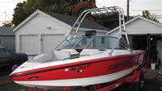
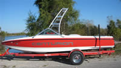
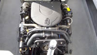
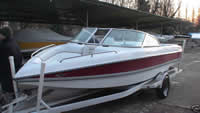
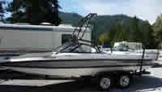
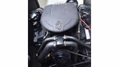

Tigé PRE 2100 WT: toujours en avance sur son temps 15 ans plus tard?
C'est en tout cas ce que l'on serait tenté de penser en voyant Malibu faire du wedge (le TAPS du Tigé, vous vous rappelez?) son argument de vente principal pour le pratiquants de ski et de wakeboard.
Plus fort encore, la marque Centurion (non importé en Europe) commercialise à partir de 2005 son modèle haut de gamme Centurion T5 pro Comp, qui est la copie parfaite du PRE2100WT comme on le voit sur ces photos:
| En haut: Centurion T5 pro Comp (modèle 2006) |  |  |  | |
| En bas: Tigé PRE2100WT (modèles 1996 en rouge et 1999 en gris) |  |  |  |
En voyant ces images on réalise qu'en 2005 les ingénieurs de Centurion ont simplement copié les Tigé de 1995-99 pour leur nouveau modèle haut de gamme. Le T5 pro Comp est encore commercialisé par Centurion en 2009.
Néanmoins, à la décharge de Centurion, Tigé n'a pas fait beaucoup évoluer ses modèles les années suivantes non plus, du moins jusqu'à l'introduction des RZ, très orientés wakeboard, en 2007. Donc si le PRE2100WT était un bateau fantastique à l'époque et encore aujourd'hui (on continue même, comme nous l'avons vu, à le copier), il faudra attendre 2007 pour que Tigé redesigne ses modèles.
Bref, tout cela ferait des PRE2100WT des occasions extrêment intéressantes, plus performantes même que de nombreaux bateaux neufs, sauf qu'il est aujourd'hui très difficile d'en trouver ayant moins de 1000 heures, et que très peu d'unités ont été importées en Europe.
A suivre: un test des RZ.
Accueil - Best Of - Tigé PRE2100WT - X45 - Correct Craft 2001 -